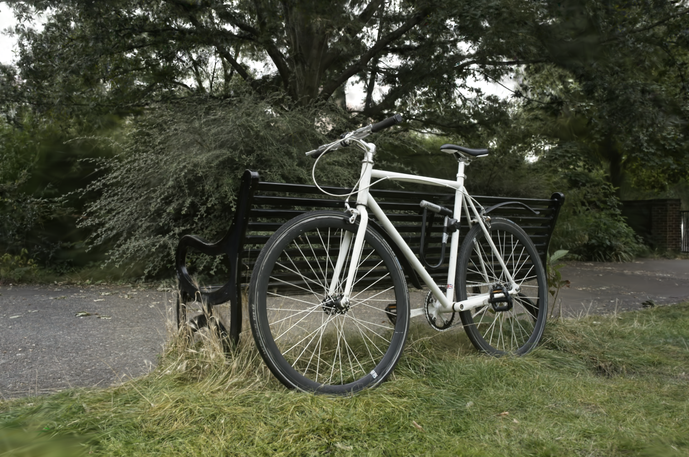
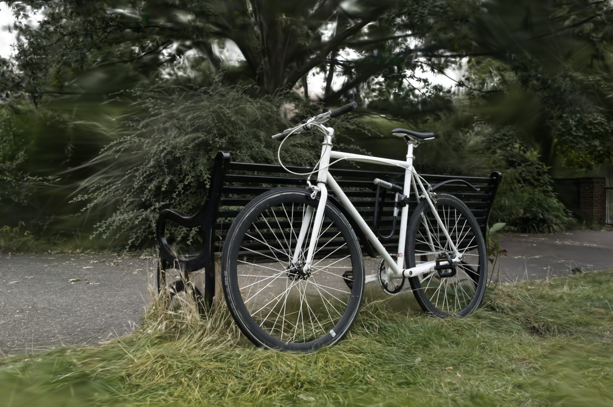
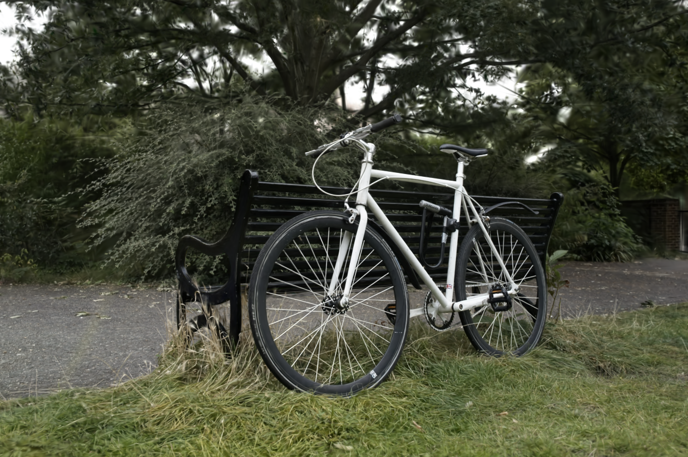
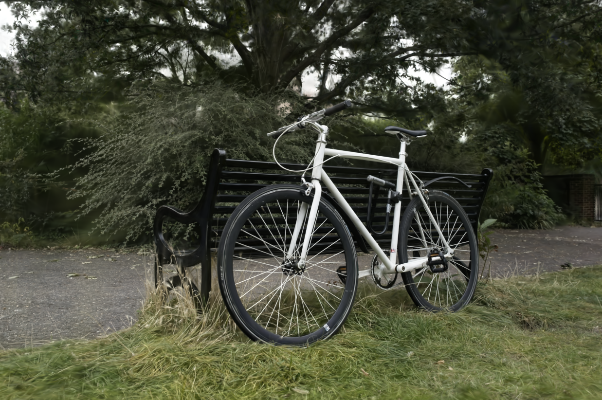
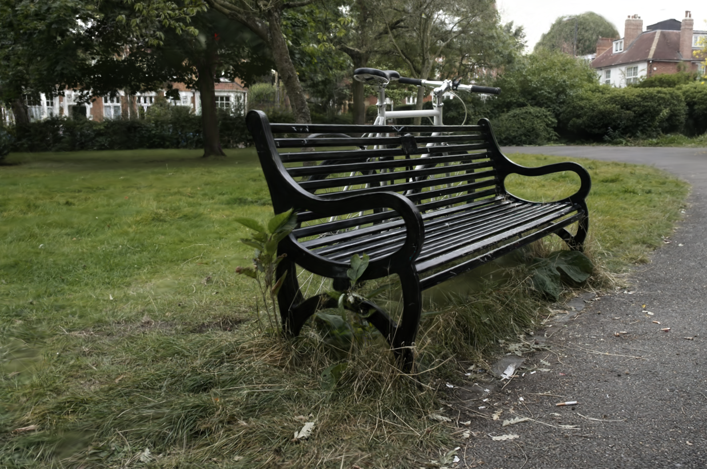
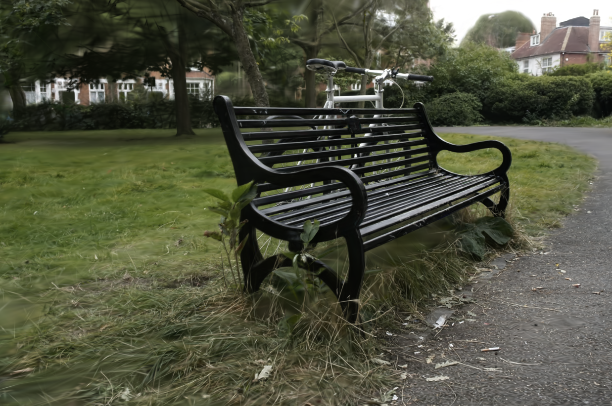
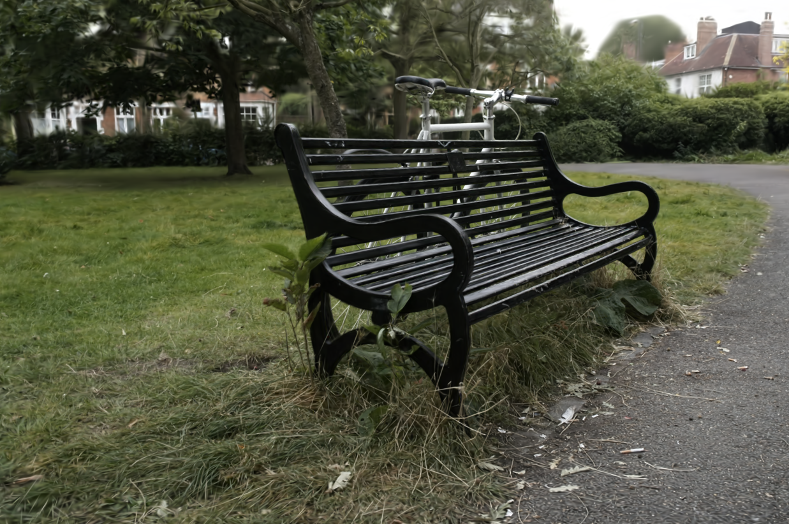
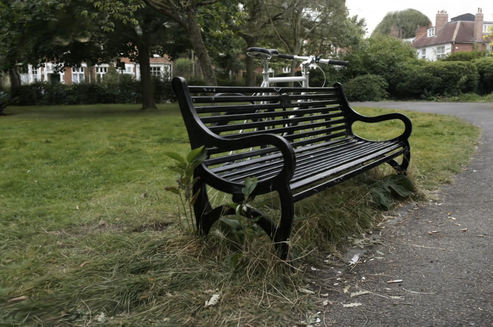

GSta: Efficient Training Scheme with Siestaed Gaussians for Monocular 3D Scene ReconstructionAnil Armagan1, Albert Saá Garriga1, Bruno Manganelli1, Kyuwon Kim2, M. Kerim Yucel1 1Samsung R&D Institute UK (SRUK), 2Samsung Electronics Supplementary video for GSta.








|